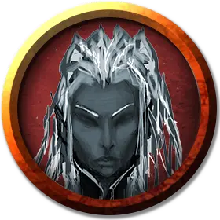

Разведчик дроу
Drow Scout
Средний Гуманоид (Эльф), нейтрально-злой

Класс Доспеха 13 (кожаный доспех)
Хиты 16 (3к8 + 3)
Скорость 30 футов
| мод | спас | ||
|---|---|---|---|
| СИЛ | 11 | +0 | +0 |
| ЛОВ | 14 | +2 | +2 |
| ТЕЛ | 12 | +1 | +1 |
| мод | спас | ||
|---|---|---|---|
| ИНТ | 11 | +0 | +0 |
| МДР | 13 | +1 | +1 |
| ХАР | 11 | +0 | +0 |
Навыки Восприятие +5, Выживание +5, Природа +4, Скрытность +6
Чувства тёмное зрение 120 футов, пассивное Восприятие 15
Языки Подземный, Эльфийский
Опасность 1/2 (100 опыта)
Бонус мастерства +2
Особенности
Острые зрение и слух. Дроу совершает с преимуществом проверки Мудрости (Восприятие), полагающиеся на зрение или слух.
Наследие фей. Дроу совершает с преимуществом спасброски от очарования, и магия не может его усыпить.
Врождённое колдовство. Базовой характеристикой дроу является Харизма (Сл спасброска от заклинания 10). Он может накладывать следующие заклинания, не нуждаясь в материальных компонентах:
• Неограниченно: пляшущие огоньки [dancing lights];
• 1/день каждое: огонь фей [faerie fire], тьма [darkness].
Чувствительность к солнечному свету. Находясь на солнечном свету, дроу совершает с помехой броски атаки, а также проверки Мудрости (Восприятие), полагающиеся на зрение
Действия
Мультиатака. Дроу совершает две рукопашные атаки или две дальнобойные атаки.
Короткий меч. Рукопашная атака оружием: +4 к попаданию, досягаемость 5 футов, одна цель. Попадание: Колющий урон 5 (1к6 + 2).
Длинный лук. Дальнобойная атака оружием: +4 к попаданию, дистанция 150/600 футов, одна цель. Попадание: Колющий урон 6 (1к8 + 2).
Описание
Разведчики это умелые охотники и следопыты, предлагающие свои услуги за оплату. Большая их часть охотится на диких животных, но некоторые также являются охотниками за головами, либо служат проводниками или военными разведчиками.